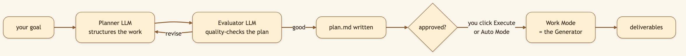
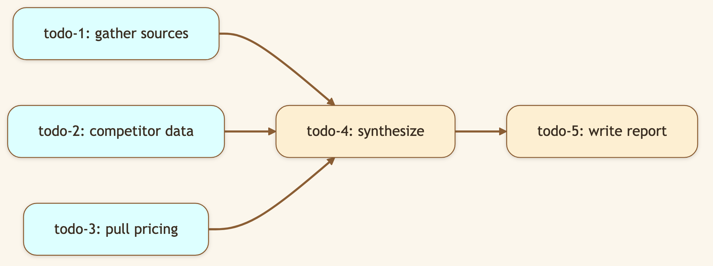
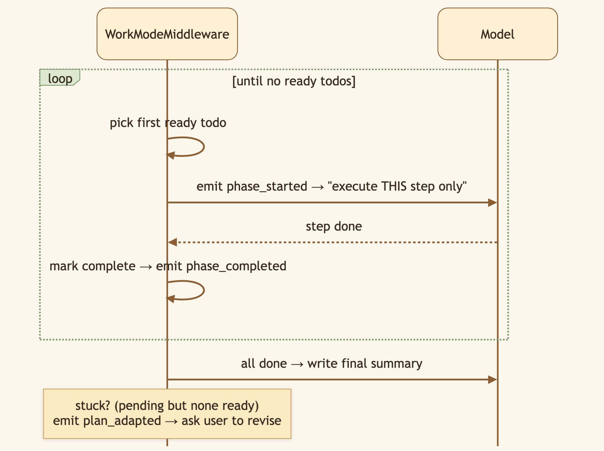

LinkedIn hook (use as the post's first line): "The difference between a junior and a senior isn't speed — it's that the senior pauses, maps the work, then starts. We taught our AI agent that instinct." Audience: LinkedIn → Medium. Eng leaders, agent builders, anyone burned by an AI that charges off in the wrong direction.
Hand a vague goal to a typical AI agent and it charges off immediately, improvising — and you discover three steps in that it misunderstood the whole thing. CapyHome bakes in a senior's instinct with two distinct gears: a Plan Mode that maps the work first, and a Work Mode that executes it.
🖼️ [User add: image containing — the two mode chips side by side in the input toolbar (🛠️ Work / 🗺️ Plan). Reuse existing assets asset/CapyHome/Work_Mode.png and plan_mode-chat.png as a two-up comparison.]
Plan Mode is a deliberate choice you make — there's no surprise auto-escalation mid-task.

While planning, Plan Mode is deliberately declawed — read-only tools plus web search for scope discovery only. A runtime gate (PlanExecutionGateMiddleware) physically blocks it from writing files or running code, so the planning phase stays a planning phase.

todo-1/-2/-3 have no dependencies — so they're ready and can fan out to Baby Capy sub-agents in parallel. todo-4 waits for its inputs. The system recomputes "ready" at every step.

🖼️ [User add: image containing — a real screenshot of the live todo/phase list executing in the UI, with some todos checked and one "in progress." Capture during a Plan Mode run from the running app.]
Plan Mode writes a real file: plan.md in the workspace (canonical plan_version: 6), with a YAML header — objective, assumptions, risks, acceptance criteria, the full todo graph — and a human-readable body. It's versioned on every revision. Because it's a file, you can edit it before approving; at handoff, CapyHome re-reads it from disk and honors your edits. The plan is a contract, not a black box.
plan_agent and work_agent are distinct, with distinct tool catalogs — internal_tools_plan.json (read-only surface) vs. internal_tools_work.json (full execution surface). Mode isn't a flag the model can ignore; it's a different graph with different tools.PlannerMiddleware invokes a dedicated planner with PLANNER_SYSTEM_PROMPT, parsing structured PlannerOutput JSON (title, objective, assumptions, constraints, risks, acceptance criteria, a domain classification, and the todo list with depends_on, owner, subagent_type, failure_fallback, steps).PlanEvaluatorMiddleware runs a fast, timeout-bounded quality check that can patch the todo graph (add / modify / remove) before you ever see it.TodoDagMiddleware normalizes todos and computes ready_ids (status not done/blocked AND all depends_on completed). WorkModeMiddleware walks that, emitting phase_started, phase_completed, and — when the graph stalls — plan_adapted.planner.max_plan_steps (default 8), planner.max_clarifications (5), todos.dag_enabled, evaluator.plan_evaluator_timeout_seconds.plan_adapted and let you decide to revise — we don't silently re-plan.)plan.md to disk at all? Because a plan you can't see or edit is a black box, and black boxes erode trust. A readable, editable, versioned file makes the agent's intentions auditable and steerable.Title card: "I gave my AI a vague goal. Watch it plan before it acts."
[0:00–0:10] Hook: "Most AI agents charge off and improvise. Then you find out three steps in they misunderstood the whole thing. Here's a different approach."
[0:10–0:25] Screen — type a fuzzy goal, click Plan Mode: "I'll give it something genuinely ambiguous, and switch to Plan Mode."
[0:25–0:45] Screen — plan.md appears: "Instead of doing anything, it wrote a plan — objective, assumptions, risks, and a dependency graph of steps. And it's a file I can edit." (tweak one step.)
[0:45–1:05] Screen — click Execute, phases run: "Now I approve it. Work Mode takes over and executes step by step — and these independent steps run in parallel." (point at multiple phases.)
[1:05–1:25] Close: "Plan first, then execute — the difference between a junior and a senior. Open source, link below."
Take a genuinely ambiguous goal ("help me decide which framework to standardize on"), click Plan Mode, watch
plan.mdget written, tweak a step, then hit Execute.
Next: Auto Mode → — for when you trust the plan and just want it to run.